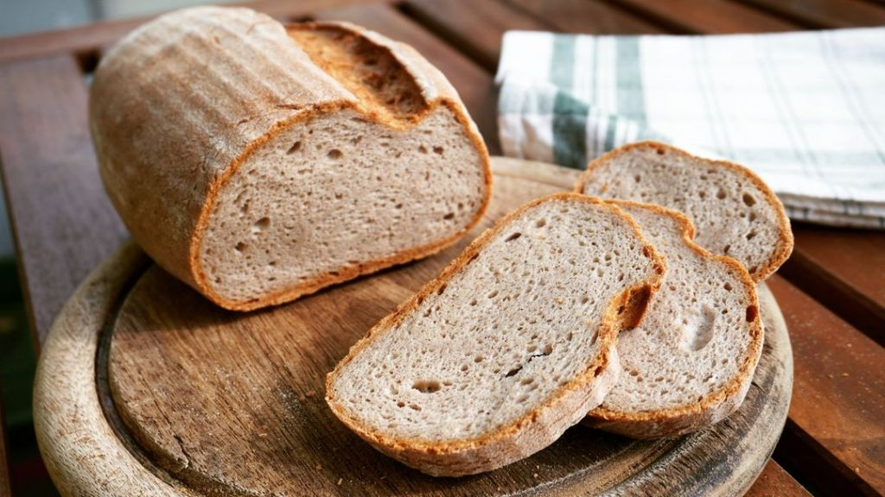
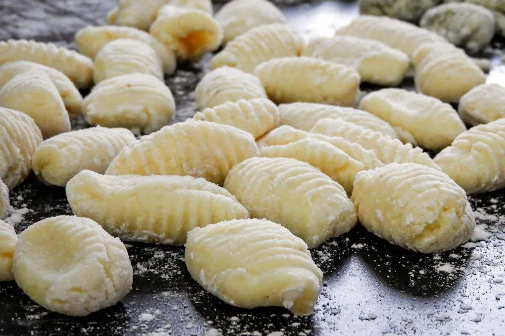
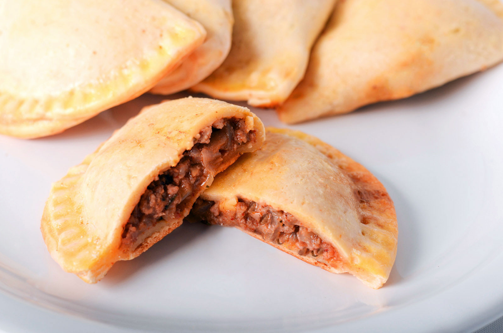

Pan Sin Gluten Esponjoso
- 300 g de premezcla sin gluten
- 100 g de trigo sarraceno (opcional)
- 10 g de psyllium
- 10 g de levadura seca
- 4 g de azúcar
- 400 cc de agua tibia
- 50 cc de aceite de girasol
- Sal a gusto
Primero, colocá la levadura seca junto con el azúcar y una pequeña parte del agua tibia en un recipiente. Mezclá suavemente y dejá reposar unos minutos hasta que se forme una espuma en la superficie, lo que indica que la levadura está activa.
Mientras tanto, en un bol grande mezclá la premezcla sin gluten, el trigo sarraceno (si decidís usarlo), el psyllium y la sal. Integrá bien los ingredientes secos para que queden distribuidos de manera uniforme.Luego, agregá a la mezcla seca la levadura ya activada, el aceite y el resto del agua tibia. Mezclá con cuchara o espátula hasta obtener una masa homogénea y algo pegajosa. No es necesario amasar.
Volcá la preparación en un molde previamente aceitado y alisá la superficie con una espátula húmeda. Cubrí con un paño y dejá leudar en un lugar cálido hasta que la masa aumente su volumen.Finalmente, llevá a horno precalentado a temperatura media y cociná hasta que el pan esté dorado por fuera. Retirá, dejá enfriar completamente antes de cortar y ¡listo para disfrutar!

Pizza Sin TACC
- 300 g de premezcla sin gluten
- 1 cda de psyllium
- 7 g de levadura seca
- 1 cdita de azúcar
- 350–370 cc de agua tibia
- 2 cdas de aceite de oliva
- 1 cdita de sal
- Salsa de tomate (para cubrir)
- Queso mozzarella (o tu preferido)
- Ingredientes extra al gusto
Ñoquis de Queso Sin TACC
- 200 g de queso fresco rallado
- 1 huevo
- 80 g de premezcla sin gluten
- 30 g de queso parmesano rallado
- Sal y pimienta a gusto
- Opcional: nuez moscada

Masa de Empanadas Sin TACC
- 500 g de premezcla sin gluten
- 50 g de fécula de maíz
- 1 cdita de sal
- 150 g de manteca fría
- 120–150 ml de agua fría
- 1 huevo (opcional para dar elasticidad)
